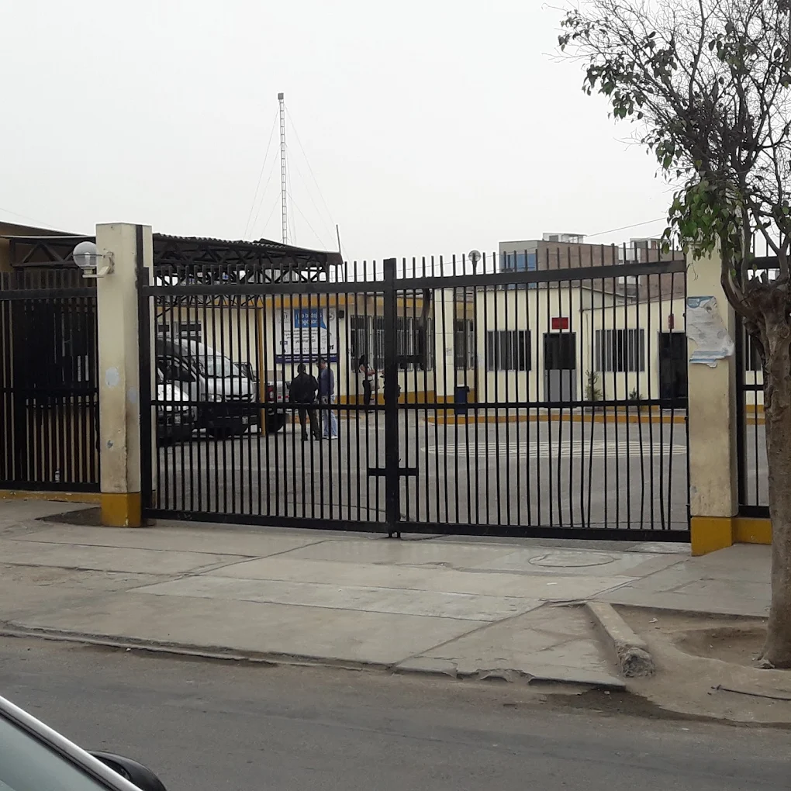

MI VIDA
Nací en Lima, en el distrito de Puente Piedra, en el Hospital Carlos Lanfranco La Hoz. Actualmente vivo en la Provincia de Quispicanchi, Departamento de Cusco, distrito de Andahuaylillas, con mis padres y hermanos. La vida en Andahuaylillas no fue muy facil al princio cuando nos mudamos, nos vinimos aca sin nada de las cosas que teniamos, perdimos tiempo e familia por que todo era trabajo para mis papás y para nosotros tras pasar los años mis hermanos saalieron profesionales una es Abogada, la otra Profesora el tercero es Contador y ya apunto de sacar sus titulos y yo la ultima tambien a pocos años de terminar la carrera. Como mis papás siempre nos dijeron smos su orgullo.
